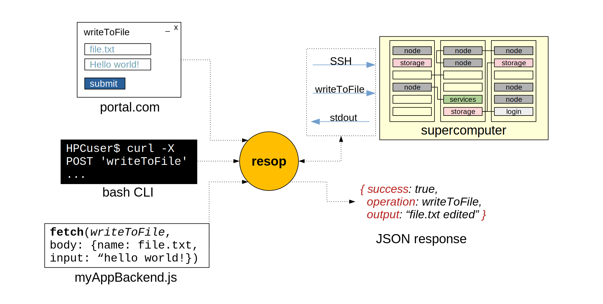

resop: remote shell operational API#
resop is a RESTful API to manage user, admin, job, (any) shell operations in a remote Linux cluster. It is specifically targeted to a supercomputer / HPC cluster but it can be used for any machine accessible via SSH.
It is:
- A thin layer over classic HPC (and not) Linux clusters to make them easily accessible to third party applications, or anything talking HTTP.
- An SSH client with a library of common HPC commands and operations
- A tool to turn your long, manual command routines into a single POST request.
|  |
|---|
| High-level interaction diagram of the resop API and some typical applications |
Features#
- Run remote Linux shell commands through HTTP directly to a remote cluster and get a JSON response.
- Commands and arbitrary JavaScript are chained together to create more complex Operations that can be run in the same way as commands.
- A library of operations of typical HPC commands and routines is organized into operators. Some examples: slurm, ldap, utils
- Simple customisation: you can implement custom operations without dealing with API logic. Just create a JavaScript file using the provided class, list series of commands or use JavaScript power for server-side operations such as parsing strings.
- Secure commands and operations: every endpoint is accessed prior token-based authentication and will run remote operations with the privildeges of the corresponding authenticated user.
- Quick setup: NodeJS and MariaDB* are the only dependencies, one file configuration and the API is ready to be used
- Run anywhere: resop is stateless and uses remote SSH authentication so it can be hosted anywhere that has access to the HPC cluster
- Connect 3rd party apps: as any other RESTful API, you can easily connect to web or destop apps (portals, IDEs, local CLI apps etc.). Call the API from any programming language -> read the result -> done!
*only needed if the logging feature is enabled
Use-cases#
Administration routines#
I am a admin of an HPC center and I want to automate some recurrent operations that are done manually.
In order to create or delete a user, I need to update different services: the system user database (LDAP), the scheduler database (Slurm) and the database for the online portal for remote visualization (PostgresSQL). The procedure to create an account becomes:
$ ssh admin@hpccenter # ssh into the system
$ vim new_user.ldif # write user details to LDIF
$ ldapadd -f new_user.ldif # add the new user the LDAP database
$ sacctmgr create user ... # add the user to slurmdbd
# go to the web portal and add the new user
With resop, I can group all this steps into a custom operation in my custom operator that I call: hpccenter->createUser. I will then just call:
curl -X POST -d "username=value1&password=value2" https://resop:3000/hpcuser/opn/createUser
Or I can call the API endpoint from within a basic HTML form page, or put it in a script on my local machine
Developer#
I am developing a portal to facilitate user access to "HPCcluster" and I want to display a monitoring graphical interface showing available nodes with hardware information displayed when clicking on a node.
I can fetch all the infomation by calling resop from the portal backend, for instance, by calling the batch scheduler (such as Slurm) informative command. I will then receive a JSON object as a response that I can parse and use for my graphical interface. This approach is language-neutral so it is compatible with any programming language my application is written in.
If the functionality that I need it is not in resop library, I can also implement my personal operation in resop, in a single JavaScript file.
HPC user / researcher#
I am an HPC user that needs to run a batch of simulations with different initial conditions. I can use resop to submit multiple jobs from my machine using postman or other tools that facilitate the interaction with an API, without having to connect to the cluster directly.
(in future versions) I use the loggin functionality of the API to keep track of my past simulations and organize them.